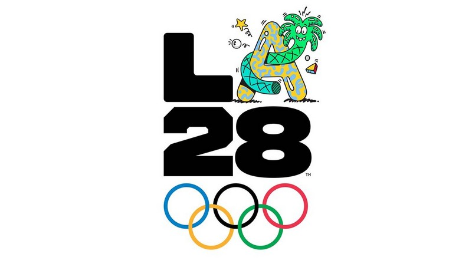

Web · HTML / CSS
Site sur les Jeux Olympiques 2028
Création d’un site web consacré aux Jeux Olympiques 2028, réalisé à partir de besoins définis dans le cadre du projet.

Description
Le projet porte principalement sur la conception des pages et leur mise en forme afin de proposer une navigation claire.
J'ai travaillé sur la structure HTML et la présentation CSS des différentes pages.
Travail réalisé
- Structure des pages HTML
- Organisation du contenu
- Mise en forme CSS
- Navigation entre les pages
- Adaptation de la présentation
Apprentissages critiques mobilisés
Ces apprentissages critiques sont ceux que je peux illustrer à travers ce projet. Ils sont également reliés aux autres projets dans la page Compétences.
Création d’interfaces web et organisation du contenu.
Implémentation des différentes pages du site.
Preuve de progression
Je connaissais déjà les bases de HTML et CSS.
Le projet m'a permis de mieux organiser plusieurs pages et de travailler la cohérence d'une interface web complète.
Mobiliser ces connaissances dans un projet concret, expliquer mes choix techniques et produire une solution fonctionnelle adaptée au problème posé.